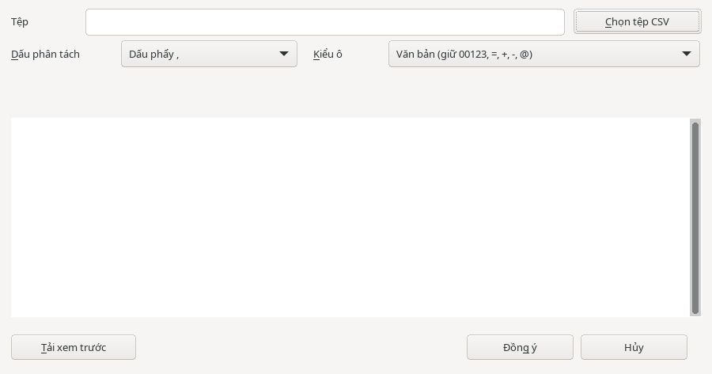

Bảng tính
Bảng tính: nhập CSV (UTF-8)
Công cụ giúp nhập tệp CSV tiếng Việt và giữ số 0 ở đầu mã số, số điện thoại.
Công cụ chỉ nhận tệp UTF-8; tệp UTF-16 bị từ chối.
Chọn tệp và xem trước
- Trong HST Sheets, chọn ô bắt đầu nhập dữ liệu.
- Chọn (có ở mọi màn hình; ngoài HST Sheets, lệnh tự mở bảng tính mới), hoặc tìm lệnh này trên thẻ .
- Trong hộp thoại , bấm để chọn tệp.
- Chọn đúng với tệp: “”, “” hoặc “”.
- Chọn theo cách bạn muốn giữ dữ liệu, như mô tả bên dưới.
- Bấm và kiểm tra dữ liệu trước khi nhập.

Chọn kiểu ô
- : dùng khi cần giữ nguyên mã số, số điện thoại hoặc nội dung có các ký tự này.
- : cho phép nhập dưới dạng số khi an toàn; phần còn lại được giữ dưới dạng văn bản.
Nhập vào trang tính và hoàn tác
- Khi bản xem trước phù hợp, bấm . Dữ liệu được nhập từ ô bạn đã chọn.
- Nếu có thông báo , hãy kiểm tra dữ liệu tại vùng đích trước khi đồng ý ghi đè.
Để hoàn tác lần nhập vừa thực hiện, nhấn Ctrl+Z một lần.